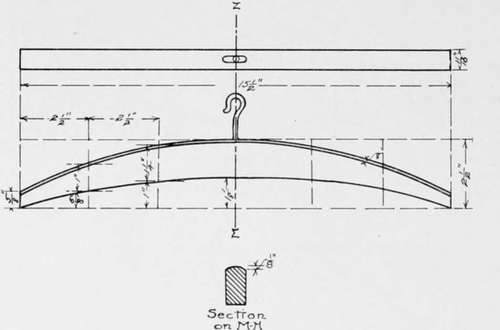
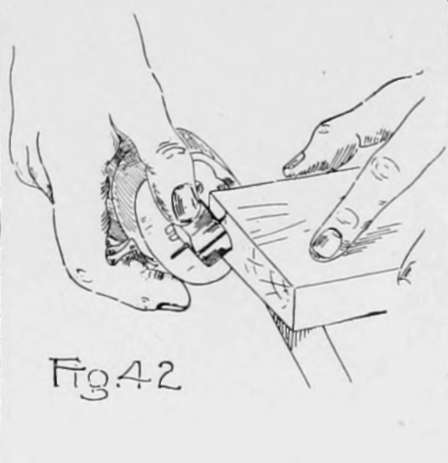
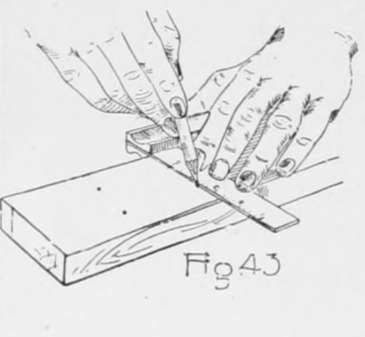
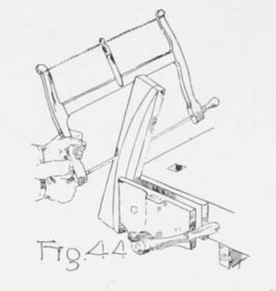
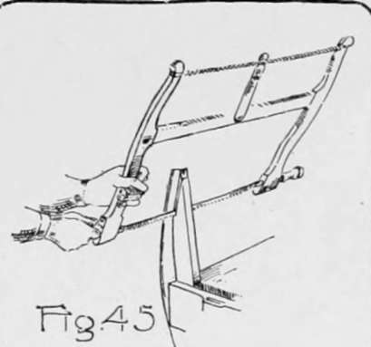
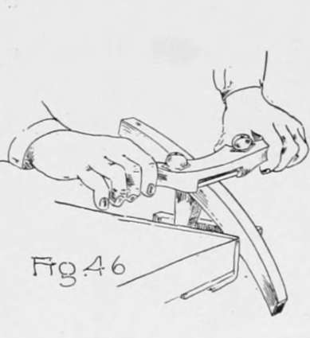
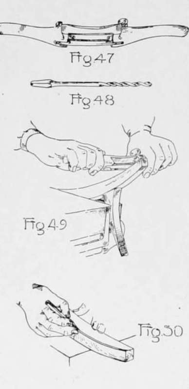
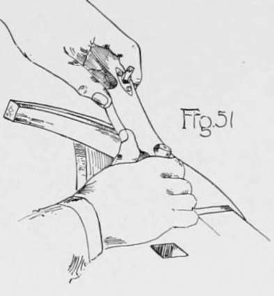
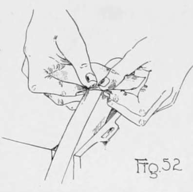

Chapter V. Curve Sawing And Spokeshaving
Description
This section is from the book "Beginning Woodwork At Home And In School", by Clinton Sheldon Van Deusen. Also available from Amazon: Beginning Woodwork At Home And In School.
Chapter V. Curve Sawing And Spokeshaving
In this chapter the method followed in simple modeling, as employed in producing a piece of curved outline, is explained.
Coat Hanger
The material required is a piece of redwood l6"x2 3/4 "x 13/16" and a No. 10 screw-hook. The new tools to be used are the turning saw. spokeshave and twist-bit. The spokeshave is practically a very short plane with handles on the sides, by means of which it may be pulled toward or pushed away from you. The thickness of the shaving may be regulated by the adjusting screws. The spokeshave is used to form and smooth curved surfaces.
(a) The working face and joint side should be planed as in Chapter IV, a to f.
(b) Do not gage or plane the piece to width but smooth the side opposite the joint side with a few strokes of the plane.
(c) Gage the thickness (l)* of the piece from the working face on the joint side and the side opposite.
(d) Plane to thickness as in Chapter IV, k.
(e) With the block-plane bring the piece to the exact length (2) in a manner similar to that described in Chapter IV, m to o.
*From this point on, the student should try to determine the dimensions from the working drawing, but if he is unable to do so or wishes to check his results, the dimensions which are denoted in the text by numbers may be found in the appendix at the end of the book.
(f) Set the gage to 5/8", and with the gage-block against the joint side, gage a line across each end as in Fig. 42.
(g) Place the try-square on the piece with the blade on the working face and the beam against the joint side. Now hold the try-square with the left hand (Fig. 29) and move it to the distance (3) from the end necessary for locating the first two points for the curves; then using the graduations on the blade of the try-square make marks (Fig. 49) with a sharp pencil at the correct distances (4 and 5) from the joint side. By a similar method locate (6) the next pair of marks (7 and 8), also locate (9) the middle points (10, 3 The points on the other end are located in the same way.
(h) With a pencil draw a light line through the five points farthest from the joint side, extending it to the ends of the gage lines that were made on the ends of the piece, and in a similar manner draw a line through the five points nearest the joint side extending it to the corners of the working face next to the joint side. By making the lines light at first, corrections may easily be made in them until smooth curves are formed.
(i) Clamp a practice piece in the vise and try sawing irregular curves with the turning saw, holding the saw as in Fig. 44; continue the practice work until able to control the saw. It will be noticed that by turning the handles the blade of the saw may be turned to different positions with reference to the frame, thus making it possible to avoid obstructions that are in the way of the frame, but be sure that the saw blade is not twisted.
(j) Now clamp the piece for the coat hanger in the vise as in Fig. 44 and saw about 1/8" outside of the curve for the top of the coat hanger. Start the saw near the middle and saw to the end, taking notice that the blade is kept perpendicular to the working face. Change the piece in the vise so that the corner of the piece diagonally opposite will be clamped in a similar position in the vise, and saw from the middle to the other end of the piece.
(k) Now clamp the piece in the vise as in Fig. 45 and saw about 1/8" outside of the lower curve. Saw from the end to about the middle of the piece. Change the position of the piece in the vise and saw from the other end until the saw cut made from the opposite end is reached.
(1) Using one of the scrap pieces sawed off in j as a prop, clamp it and the coat hanger in the vise as shown in Fig. 46. Now with the spokeshave (Fig. 47) cut as in Fig. 4(3 from the middle to the end on the convex side until the pencil line is reached. A test should be made with the try-square before the line is reached to determine whether this surface is square with the working face and if it is not an effort should be made to correct the defect by the time the line is reached, but do not go beyond the line to do it. In a similar manner smooth down the remainder of the curve by cutting from the middle toward the other end.
(m) With the beam of the try-square against the working face and the blade extending across the surface just finished, draw a knife line square across this surface even with the middle point marked in g.
Set the gage at 11/32" and with the gage-block against the working face gage a short line crossing the knife line. Where these lines cross, bore a hole for the hook 1" deep, using the 4/32" twist-bit (Fig. 48). To do this, fasten the bit in the brace and measure the length of the bit exposed outside of the brace. Then bore the hole until 1" less than that amount is exposed between the brace and the wood. Use care that the hole is bored straight.
(n) Clamp the piece and prop in the vise as in Fig. 49, and with the spokeshave, cut from the end toward the middle on the lower or concave side until the line is reached, testing with the try-square as in 1. Reverse the piece in the vise and smooth the remainder of the concave side in a similar manner. Great care must be used when working near the ends on the concave side as the curve should be concave entirely to the end, and at the same time nothing should be cut from the edge that was orignally formed by the joint side and end.
(o) Hold the pencil as in Fig. 50 and try gaging a pencil line parallel to and near the edge of a practice piece, using only the hand and pencil. When able to do this well gage a light line in a similar manner 1/8" from the convex edge on both the working face and the surface opposite. Also gage two lines on the convex surface, one of them 3/16 from the working face and the other 3/16" from the opposite surface.
(p) Again clamp the piece in the vise, and with the spokeshave, cut two bevels, or chamfers, on the convex side down to these pencil lines (Fig. 51.) Test with the straight-edge as in Fig. .39 to make sure that each of these bevels is straight across and not left high in the middle. This will form three surfaces on the convex side. One is a part of the orignal surface and the other two are the bevels just cut.
(q) The two parellel edges that now run lengthwise of the convex side should be cut off with the spokeshave, forming two narrow surfaces in their places. Each additional cut widens these surfaces but the cutting should not continue after the width of each of the new surfaces is the same as the part that remains of the three original surfaces. This should make five equal-width surfaces and four parallel edges.
(r) If this work of modeling, as it is called, has been done with care it will be possible to continue the process still further by forming four new surfaces in place of the four edges, making nine equal-width surfaces, but do not touch the spokeshave to the work unless sure that an edge can be replaced by a surface narrower than those already on the piece.
(s) With a piece of No. l/2 sandpaper about 3"x4" rub this surface as shown in Fig. 52 until the the surface is as smooth as the planed surfaces. Screw the hook into the hole made in m and the coat hanger is ready for use.

Continue to: